Thiết lập khu vực chơi
Trong phần đầu tiên này, chúng ta sẽ thiết lập khu vực chơi. Hãy bắt đầu bằng cách import các asset khởi đầu và thiết lập scene game.
Chúng tôi đã chuẩn bị một dự án Godot với các mô hình 3D và âm thanh sẽ dùng trong bài hướng dẫn này, được liên kết ở trang mục lục. Nếu chưa tải, bạn có thể tải file nén tại đây: Asset của Squash the Creeps.
Sau khi tải xong, hãy giải nén file .zip trên máy tính. Mở Godot Project Manager và nhấp nút Import.

Trong cửa sổ import, nhập đường dẫn đầy đủ đến thư mục vừa được tạo 3d_squash_the_creeps_starter/. Bạn có thể nhấp nút Browse bên phải để mở trình duyệt file và điều hướng đến file project.godot trong thư mục đó.
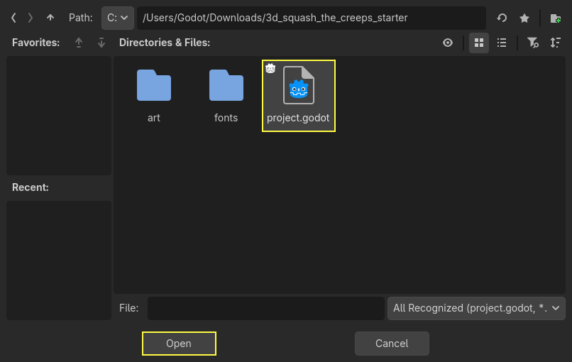
Nhấp Import để mở dự án trong trình chỉnh sửa.
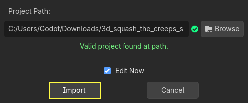
Một cửa sổ có thể xuất hiện thông báo rằng dự án được tạo bằng phiên bản Godot cũ hơn. Nhấp OK để chuyển đổi dự án sang phiên bản Godot hiện tại của bạn.
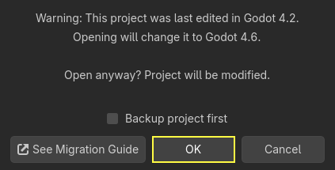
Nếu dự án không mở ngay, hãy mở nó từ danh sách dự án của bạn.
Dự án khởi đầu gồm một biểu tượng và hai thư mục: art/ và fonts/. Trong đó, bạn sẽ tìm thấy các asset đồ họa và âm nhạc mà chúng ta sẽ dùng trong game.

Có hai mô hình 3D là player.glb và mob.glb, một số material thuộc về các mô hình này, và một bản nhạc.
Thiết lập khu vực có thể chơi
Chúng ta sẽ tạo scene chính với một Node đơn giản làm gốc. Trong dock Scene, nhấp vào nút Add Child Node có biểu tượng "+" ở góc trên bên trái rồi nhấp đúp vào Node. Đặt tên node là Main. Một cách khác để đổi tên node là nhấp chuột phải vào Node và chọn Rename (hoặc F2). Ngoài ra, để thêm một node vào scene, bạn có thể nhấn Ctrl + A (Cmd + A trên macOS).

Lưu scene với tên main.tscn bằng cách nhấn Ctrl + S (Cmd + S trên macOS).
Chúng ta sẽ bắt đầu bằng việc thêm một mặt sàn để các nhân vật không bị rơi xuống. Để tạo các vật va chạm tĩnh như sàn, tường hay trần, bạn có thể dùng các node StaticBody3D. Chúng cần các node con CollisionShape3D để xác định vùng va chạm. Với node Main đang được chọn, hãy thêm một node StaticBody3D, sau đó thêm một CollisionShape3D. Đổi tên StaticBody3D thành Ground.

Cây scene của bạn sẽ trông như thế này

Một biểu tượng cảnh báo xuất hiện bên cạnh CollisionShape3D vì chúng ta chưa xác định hình dạng của nó. Nếu bạn nhấp vào biểu tượng, một cửa sổ bật lên sẽ cung cấp thêm thông tin.

Để tạo một hình dạng, hãy chọn node CollisionShape3D, chuyển đến Inspector và nhấp vào trường <empty> bên cạnh thuộc tính Shape. Tạo một BoxShape3D mới.

Hình hộp rất phù hợp cho mặt đất phẳng và tường. Độ dày của nó giúp chặn chắc chắn cả những vật thể di chuyển nhanh.
Khung lưới của một hình hộp xuất hiện trong viewport với ba chấm màu cam. Bạn có thể nhấp và kéo các chấm này để chỉnh kích thước hình dạng một cách trực quan. Chúng ta cũng có thể đặt kích thước chính xác trong inspector. Nhấp vào BoxShape3D để mở rộng resource. Đặt Size của nó thành 60 trên trục X, 2 cho trục Y và 60 cho trục Z.
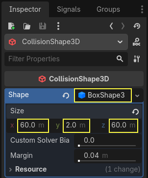
Các hình dạng va chạm là vô hình. Chúng ta cần thêm một mặt sàn hiển thị đi kèm với nó. Chọn node Ground và thêm một MeshInstance3D làm node con.

Trong Inspector, nhấp vào ô bên cạnh Mesh và tạo resource BoxMesh để tạo một khối hộp nhìn thấy được.

Một lần nữa, mặc định nó quá nhỏ. Nhấp vào biểu tượng hộp để mở rộng resource và đặt Size của nó thành 60, 2 và 60.
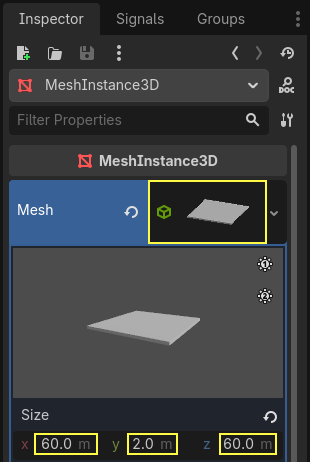
Bạn sẽ thấy một tấm phẳng màu xám rộng che phủ lưới cùng các trục xanh dương và đỏ trong viewport.
Chúng ta sẽ di chuyển mặt đất xuống để có thể thấy lưới sàn. Để làm điều này, có thể dùng tính năng bắt dính lưới (grid snapping). Có 2 cách bật bắt dính lưới trong trình chỉnh sửa 3D. Cách thứ nhất là nhấn nút Use Snap (hoặc nhấn phím Y). Cách thứ hai là chọn một node, kéo một tay cầm trên gizmo rồi giữ Ctrl (Cmd trên macOS) trong khi vẫn giữ node đã chọn.
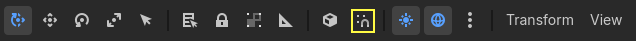
Bắt đầu bằng cách bật bắt dính theo cách bạn thích. Sau đó di chuyển node Ground theo trục Y (mũi tên xanh lá trên gizmo).
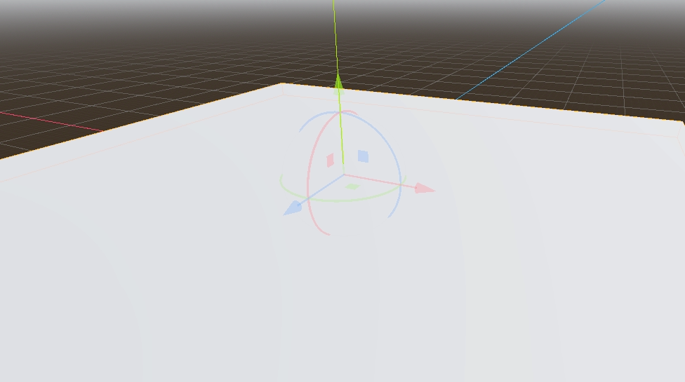
Ghi chú
Nếu bạn không thấy công cụ thao tác đối tượng 3D như trong hình trên, hãy đảm bảo Transform Mode đang được bật trên thanh công cụ phía trên khung nhìn.
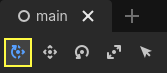
Di chuyển mặt đất xuống 1 mét để lưới của trình chỉnh sửa hiển thị. Một nhãn ở góc dưới bên trái viewport cho bạn biết bạn đang dịch chuyển node bao nhiêu.
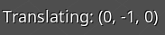
Ghi chú
Di chuyển node Ground xuống sẽ di chuyển cả hai node con theo. Hãy đảm bảo bạn di chuyển node Ground, không phải MeshInstance3D hay CollisionShape3D.
Cuối cùng, vị trí Y của Ground phải là -1.

Hãy thêm một đèn định hướng để scene không toàn màu xám. Chọn node Main và thêm một node con DirectionalLight3D.
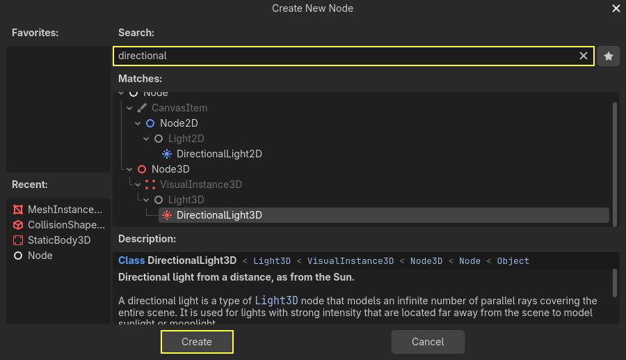
Chúng ta cần di chuyển và xoay node DirectionalLight3D. Di chuyển nó lên bằng cách nhấp và kéo mũi tên xanh lá của công cụ thao tác, rồi nhấp và kéo cung tròn màu đỏ để xoay nó quanh trục X, cho đến khi mặt đất được chiếu sáng.
Trong Inspector, bật Shadow bằng cách nhấp vào ô đánh dấu.
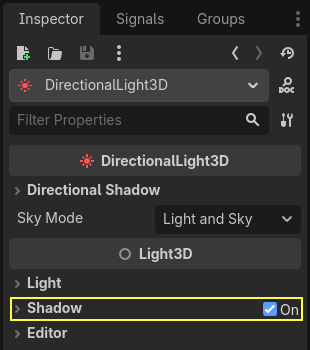
Đến lúc này, dự án của bạn sẽ trông như thế này.
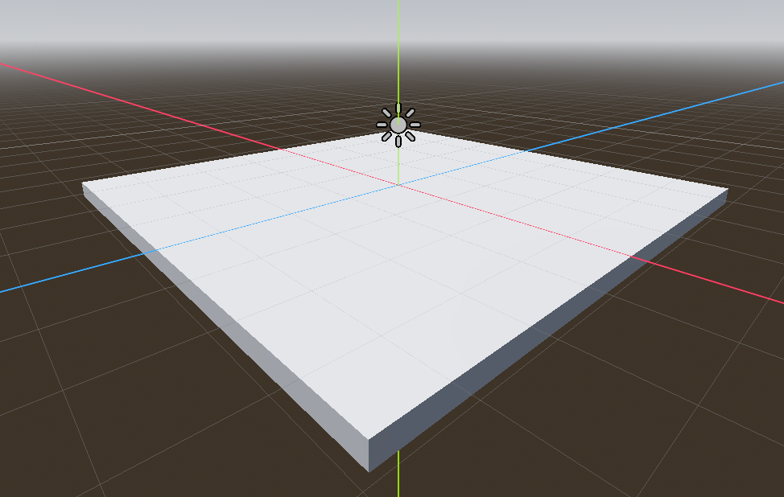
Đó là điểm khởi đầu của chúng ta. Ở phần tiếp theo, chúng ta sẽ làm scene người chơi và chuyển động cơ bản.